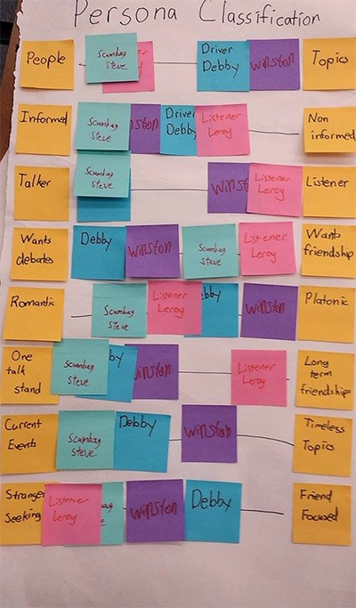

Inspirational Designs
Brief:
Video chat is an incredibly powerful medium. It can bring people from across the world together to hold discussions, conversations, and all sorts of humanly engagements with a single call. Though public video chat has brought us a step closer to a worldly society, a large variety of trolls has made the public video chat into a cesspool of behavior. Users of video chat who would otherwise enjoy conversing with others are becoming disenchanted with these actively negative behaviors. We hope to revitalize the potential that the video chat medium has had to bring people together.
Personas:
When looking at potential users who might want to use a platform that brings strangers together online, we started to think of as many different personas as we could and then grouped them together into what became out actual personas:
Scumbag Steve:
Scumbag Steve represents all of our anti-users. Scumbag Steve is a man that goes on the internet to seek pornography and has romantic intentions in using this website. He also tries to sell products or advertise to conduct business. He is also interested in converting others to his religion, and sell his ideas to others to convince and convert. All of these behaviors will inhibit the other users from sharing or gaining insight, so we do not want Scumbag Steves. This website is purely for people that can contribute to sharing wanted knowledge, people that wish to learn from others, and people that wish to develop platonic friendships.
Driver Debby
Debby has a type A personality. Debbie is 37 years old and a graduated from Yale University with a degree in management. She is presently a partner at a large consulting firm in Boston. In terms of personal life, she has a long time boyfriend but no plans have been made for marriage. She has travelled across the world for both work and pleasure and has a lot of cultural experiences she enjoys telling to other people. She enjoys having people listen to her, it gives her a feeling of power and makes her feel respected. She is very smart and loves to debate about anything ranging from the European migrant crisis to Greek history. She sees a professional video chat as a way to get people to view her as someone who is impressive and to find someone who is is interested in debating her.
Listener Leroy (Mitchell)
Listener Leroy is an older gentleman who anyone would talk to. Though considerate of others, he often finds himself a bit lonelier compared to others and as such, Leroy is very interested in the stories, lives, and perspectives of other people actively pursues these stories. Sometimes he wants to add expand his world understanding, other times he is looking to meet new long-lasting friends by engaging others. Though he often takes a secondary role in conversations, he always does his best to positively encourage the other to talk and tell more about themselves.

Worldly Winston:
Worldly Winston is a persona who wants to explore different cultures, challenge his own views of the world, and gain new perspectives on life through hearted discussion with others. Whatever the subject might be, Worldly Winston is the happiest when he is learning and growing as a person. He is okay with having his opinion challenged and will genuinely reflect on what others have to say. He may be there to learn about different cultures from around the world, potentially because he is hoping to visit one day. He may also be drawn to the site because he is wrestling with an idea or trying to figure out his stance on a current event. He is a person who might be living in a relatively homogenous population where he cannot find others who have different opinions or worldviews and therefore hungers for having his beliefs challenged. He isn’t trying to enforce his opinions on others but will state his opinions openly and be very happy if those opinions end up changing throughout the conversation.
Design Artifacts:
We constructed a very useful artifact in which we first ideated axis that our users could fall on and then plotted both some of interviewed users and then afterwards our personas. This exercise helped us better understand and discuss both our users and our personas.

Problem:
The primary persona we are targeting is Winston, while Debby and Leroy are secondary personas we would like to also design for. Scumbag Steve is our anti persona and we wish to prevent him from using our site. The following are their problems:
Wordly Winston:
Winston is very interested in exploring the world and gaining perspectives that are very different from his own. Unfortunately, his friend group is fairly homogenous and other online chat sites never seem to spur a productive, rewarding conversation about culture or philosophy.
Driver Debby:
Debby is looking for a place to have a good debate outside of the workplace. She is worried that if her coworkers know her opinions they will think more negatively about her. She is looking for a place where she can find competent people to discuss topics with that she may not be comfortable discussing at work.
Listener Leroy:
Leroy loves talking to people, but unfortunately he lacks of lot if this interaction in his day to day. He is turning to the internet to find interesting people who have wonderful life stories that they want to tell. He wants to encourage others to talk to him online so he can fulfill his social need.
Scumbag Steve:
We are going to discourage Scumbag Steve from entering our site. They are the creator of the problem that our website is focused on solving. We will do this by either divert them by creating a section just for them, or give a clear message that they are not welcome.
Insight Stories:
While talking with our users, there were several insights that we gleaned from our conversations and several lessons that we have taken away for moving forward with our platform:
When having a discussion with a user, I inquired whether he would prefer discussion with strangers online or with people he knew. He stated that while he would be thrilled to discuss with people from different backgrounds to learn from them, there is a lot that he gains from knowing something. He further explained that when he discusses with someone that he knows, he implicitly and almost subconsciously draws on a immense wealth of context for that person. Even if the topic they are discussing is incredibly abstract, he still frames the other person’s viewpoints in terms of their background and previous interactions with them. From this we have learned the value of providing discussion partners with some amount of context. This could come in the form of providing partners with some pre-written self-provided background for the other person or specifically opening each conversation with an introduction period before jumping into the discussion.
One of the most well known MMORPGs (Massively Multiplayer Online Role-Playing Game), World of Warcraft (WoW), is a medium that can provide design insight on the topic of video chat. In these MMOs, players are thrown into a world with little to no knowledge of it as a character, an avatar, that they choose to play. In the beginning, they can be any person they want: extraordinarily kind, incomprehensibly mean, or even passive and laid back. This works until the player wishes to enter hard and nearly impossible endgame content. These individuals, who were only spread players before, must collect into guilds of strangers. Through the pressures of this guild and a shared goal, these individuals become tightly woven members who once knew nothing about each other, but eventually found themselves part of a finely tuned machine. Through similar functions, a video chatting service can encourage strangers to come together with problems or goals, and with some form of community values and pressures, can root out misbehaving and toxic users.
During a discussion with a potential user she claimed she enjoyed hearing the opinions on a wide range of topics of people that were different than her and that her friends fulfilled that need for her. She was then asked how they fulfilled that need considering the majority of them were similar to her (white, college age females). She responded saying that they were different enough. This uncovered a potential pitfall in motivation. There may be a subset of people similar to Wordly Winston, that although feel like they enjoy hearing new perspectives feel entirely satisfied by the perspectives of those around them even if they are fairly culturally and racially similar to them.
We interviewed a female potential user, Maria(not real name), who was 23 years old, in the first year of grad-school. She was interested in asking technical questions to people who have more experience, but she did not know enough people who are experts in her field. So she was interested in setting up a meeting with strangers to ask the questions she needed to ask. However, she was aware that the internet is full of Scumbag Steves who harass others, especially because she is female. She did not feel safe going online to meet strangers. We learned from this user interview and many other interviews that meeting strangers in a safe manner is a real need, especially for female users, and that it would greatly benefit someone like Maria.
This observation is also supported by the fact that other chat websites, such as Omegle, has “Video is monitored, keep it clean.” in big bold letters, and a link to lead Scumbag Steves out of the website. The combination of the user interview and looking at other websites segmented our understanding of what our problem is, and how we can solve this issue.